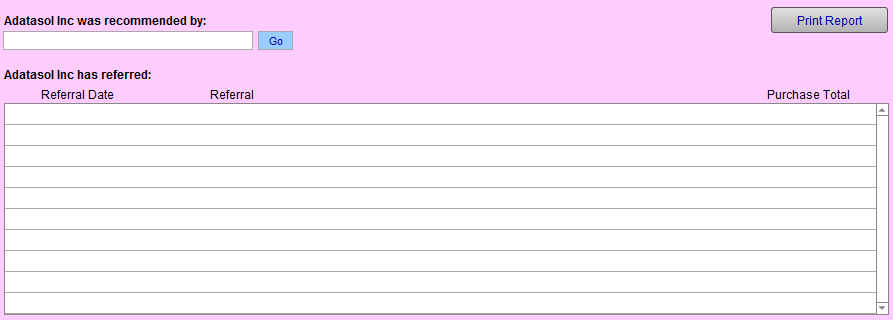

Referrals Tab
Tracking referrals in FrameReady is easy and profitable.
-
When a new customer comes through your door, they often do so on the basis of a referral from a friend or family member. The Professional Picture Framers Association has documented that over 20% of new business is via referrals.
Tip: Referrals should be entered at the point-of-sale when a new customer record is created from the Work Order screen.
Referrals Tab Explained

This Contact recommended by Drop-down
-
The existing customer who recommended this contact to you (from the list of all your contacts.)
-
The tab also shows which and how many new customers this contact has brought to your shop. You cannot type into these fields. They auto-fill when you use the Recommended By field on other contacts records.
Go Button
-
Moves from the current record to the referral record in your Contacts.
Print Report
-
Prints a report showing all customers who have made referrals.
-
To find all referrals over a date range, perform a separate search using the Find button.
-
Referrals should be entered at the point-of-sale when a new customer record is created from the Work Order screen.
How to Record a Referral
How to Track Your Top Referrals
© 2023 Adatasol, Inc.